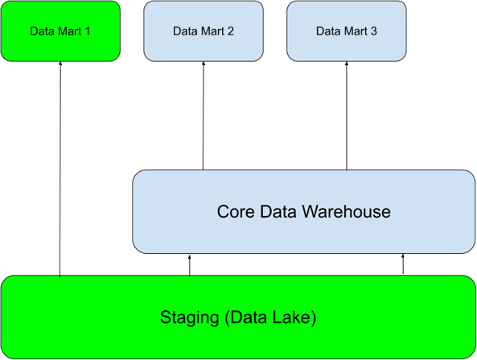

Business Intelligence
Data Marts
Gliederung der Vorlesung Business Intelligence
???
Gliederung
???
Data Marts
??? Abbildung ???
Data Mart Einordnung
- Externe (Teil-)Sicht auf das Data Warehouse
- Subjektorientiert
- Deckt Anforderungen einer speziellen Nutzergruppe ab
- Kann aber auch im Sinne es Golden Records übergreifend im gesamten Unternehmen vorhanden sein (Standardisierung vs. Individualisierung)
- Struktur der Data Marts hängt immer stark von Reporting Anforderungen ab (Unterschied Controlling & Marketing)
- Trennung nach Historisierung und Aktualität
- Unterschiedliche Aggregationsstufen
Gründe für Data Marts
- Eigenständigkeit
- Datenschutz
- Lastverteilung
- Datenvolumen
- Vereinfachung
- Verarbeitung durch OLAP Software
Vorgehen Data Mart
- Anforderungsanalyse (Scope definieren)
- Entitäten, Attribute und Quelltabellen in unterliegenden DWH-Layer identifizieren
- Berechnungslogiken der KPIs festlegen
- Fakten und Dimensionen bestimmen
- Relationale Umsetzung in Star oder Snowflake Schema
- Abschließend Übergabe Dokumentation für Erstellung Cubes in SSAS, PowerCubes oder MDDB oder direkt als Reports auf Basis des relationalen Data Marts
Aggregation und Filter Data Mart
- Beschränkung auf Teile des Schemas nur bestimmte Kennzahlen oder Dimensionen
- Inhaltliche Beschränkung, nur bestimmte Filialen oder das letzte Jahresergebnis
- Verringerung der Granularität nur Artikelgruppen
- Zeitlicher Horizont und Historisierung Beschränkung z.B. auf Monatsergebnisse
Fakten
??? Abbildung ???
- KPIs - Gewinn, Umsatz, Kosten
- Messgrößen meist aggregiert (verschiedene Fakten wenn andere Granularität gewünscht)
- Attribute sind meist arithmetisch ermittelt
- Typen von Fakten
- Transaktion – Niedrige Granularität, eine Zeile pro Transaktion
- Periodischer Snapshot – Eine bestimmter Zeitintervall baut oftmals auf Transaktionsebene auf
- Akkumulierter Snapshot – Pro Zeile wird ein definierter Vorgang abgebildet mit Start und Ende (beinhaltet oftmals placeholder, z.B. retouren bei einem Einkauf)
- Temporaler Snapshot – Bildet den täglichen Stand ab stellt dar in welchen Zeitraum ein Datensatz gültig ist und wann eine transaktion durchgeführt wurde
Summentypen
- FLOW – Addictive Fact
- zeitraumbezogen (pro Zeiteinheit)
- Beliebig aggregierbar
- Beispiel: Bestellmenge eines Artikels pro Tag
- STOCK Maß über Zeitraum – semi-Addictive Fact
- Beliebig aggregierbar mit Ausnahme temporaler Dimension
- Beispiel: Lagerbestand, Einwohnerzahl
- VALUE – PER – UNIT(VPU) - non-Addictive Fact
- zeitpunktbezogen (zum Zeitpunkt)
- Aktuelle Zustände, die nicht summierbar sind
- Zulässig nur: MIN(), MAX(), AVG()
- Beispiele: Preis, Wechselkurs, Steuersatz
- Besonderheit - Factless fact
- Beinhaltet nur Schlüssel der Dimensionen – Bridge zwischen Dimensionen
Voraussetzungen eines Fakts
- Uniqueness Wert einer Kennzahl nur einmal im Fakt
- Surrogate Keys nötig bei temporaler Betrachtung
- Werte einer höheren Aggregationsstufe lassen sich von Werten niederer Aggregationsstufe errechnen
- Stadt ➡️ Bundesland ➡️ Land
Modellierung im Data Mart
??? Abbildung ???
Snowflake
??? Abbildung ???
Star
??? Abbildung ???
Star vs. Snowflake
Star
- Hierarchien sind in den Dimensionen enthalten
- Einzelne joins
- Simples Design
- Denormalized = bessere Query Performance
- Höhere Redundanzen
- Single Point of truth in Dimensionen
- Cube processing performanter
Snowflake
- Hierarchien sind in separaten Tabellen abgebildet
- Eine Verkettung von joins
- Komplexes Design
- Normalized = schlechtere Query Performance
- Niedrige Redundanzen
- Daten sind gesplittet über die Dimensionen
- Cube processing performanter
Slowly Changing Dimensions (SCD)
- In den Data Marts wird selten nur der Current-Datensatz gefordert
- Definierte Historische Struktur
- Realtime oder min/sek Taktung
- Tagesaktuell
- Wöchentlich
- Monatlich
- Historische Wahrheit
- Rückwirkende Historie und/oder aktuelle Historie aufbauen
SCD Typ 0 - Insert Only
| Kundenummer | Name | Straße | Hausnummer | GültigVon | GültigBis |
|---|---|---|---|---|---|
| 1 | Müller | Am Weg | 3 | 01.02.2023 | 31.12.9999 |
| 2 | Schmidt | Breitestr. | 25 | 01.02.2023 | 31.12.9999 |
| 3 | Behrens | Mittelweg | 5 | 01.02.2023 | 31.12.9999 |
Daten am 01. 03.2023
| Kundenummer | Name | Straße | Hausnummer |
|---|---|---|---|
| 4 | Rudert | Hauptstr. | 1 |
| 3 | Behrens | Sandelstr. | 18 |
Resultat
| Kundenummer | Name | Straße | Hausnummer | GültigVon | GültigBis |
|---|---|---|---|---|---|
| 1 | Müller | Am Weg | 3 | 01.02.2023 | 31.12.9999 |
| 2 | Schmidt | Breitestr. | 25 | 01.02.2023 | 31.12.9999 |
| 3 | Behrens | Mittelweg | 5 | 01.02.2023 | 31.12.9999 |
| 4 | Rudert | Hauptstr. | 1 | 01.03.2023 | 31.12.9999 |
SCD Typ 1 - Update & Insert
| Kundenummer | Name | Straße | Hausnummer | GültigVon | GültigBis |
|---|---|---|---|---|---|
| 1 | Müller | Am Weg | 3 | 01.02.2023 | 31.12.9999 |
| 2 | Schmidt | Breitestr. | 25 | 01.02.2023 | 31.12.9999 |
| 3 | Behrens | Mittelweg | 5 | 01.02.2023 | 31.12.9999 |
Daten am 01. 03.2023
| Kundenummer | Name | Straße | Hausnummer |
|---|---|---|---|
| 4 | Rudert | Hauptstr. | 1 |
| 3 | Behrens | Sandelstr. | 18 |
Resultat
| Kundenummer | Name | Straße | Hausnummer | GültigVon | GültigBis |
|---|---|---|---|---|---|
| 1 | Müller | Am Weg | 3 | 01.02.2023 | 31.12.9999 |
| 2 | Schmidt | Breitestr. | 25 | 01.02.2023 | 31.12.9999 |
| 3 | Behrens | Sandelstr. | 18 | 01.02.2023 | 31.12.9999 |
| 4 | Rudert | Hauptstr. | 1 | 01.03.2023 | 31.12.9999 |
SCD Typ 2 - Update GültigBis & Insert
| Kundenummer | Name | Straße | Hausnummer | GültigVon | GültigBis |
|---|---|---|---|---|---|
| 1 | Müller | Am Weg | 3 | 01.02.2023 | 31.12.9999 |
| 2 | Schmidt | Breitestr. | 25 | 01.02.2023 | 31.12.9999 |
| 3 | Behrens | Mittelweg | 5 | 01.02.2023 | 31.12.9999 |
Daten am 01. 03.2023
| Kundenummer | Name | Straße | Hausnummer |
|---|---|---|---|
| 4 | Rudert | Hauptstr. | 1 |
| 3 | Behrens | Sandelstr. | 18 |
Resultat
| Kundenummer | Name | Straße | Hausnummer | GültigVon | GültigBis |
|---|---|---|---|---|---|
| 1 | Müller | Am Weg | 3 | 01.02.2023 | 31.12.9999 |
| 2 | Schmidt | Breitestr. | 25 | 01.02.2023 | 31.12.9999 |
| 3 | Behrens | Sandelstr. | 18 | 01.02.2023 | 31.12.9999 |
| 4 | Rudert | Hauptstr. | 1 | 01.03.2023 | 31.12.9999 |
| 3 | Behrens | Mittelweg. | 5 | 01.02.2023 | 01.03.2023 |
SCD Typ 3 - Alter Table (add column(s)) & Update & Insert
| Kundenummer | Name | Straße | Hausnummer | GültigVon | GültigBis |
|---|---|---|---|---|---|
| 1 | Müller | Am Weg | 3 | 01.02.2023 | 31.12.9999 |
| 2 | Schmidt | Breitestr. | 25 | 01.02.2023 | 31.12.9999 |
| 3 | Behrens | Mittelweg | 5 | 01.02.2023 | 31.12.9999 |
Daten am 01. 03.2023
| Kundenummer | Name | Straße | Hausnummer |
|---|---|---|---|
| 4 | Rudert | Hauptstr. | 1 |
| 3 | Behrens | Sandelstr. | 18 |
Resultat
| Kundenummer | Name | Straße | NeueStraße | Hausnummer | NeueHausnummer | GültigVon | GültigBis |
|---|---|---|---|---|---|---|---|
| 1 | Müller | Am Weg | Am Weg | 3 | 3 | 01.02.2023 | 31.12.9999 |
| 2 | Schmidt | Breitestr. | Breitestr. | 25 | 25 | 01.02.2023 | 31.12.9999 |
| 3 | Behrens | Mittelweg | Sandelstr. | 5 | 18 | 01.03.2023 | 31.12.9999 |
| 4 | Rudert | Hauptstr. | Hauptstr. | 1 | 1 | 01.03.2023 | 31.12.9999 |
Historisierung mögliche Architekturen
Mögliche Architekturen die Änderungen an historisierten Objekten berücksichtigen müssen:
- Anpassung des historischen Datenmaterials an neue Strukturen
- Gute Lösung bei kleinen Datenbestand
- alte Strukturen und Historie sind nicht vorhanden
- Separate Speicherung des historischen Datenbestandes zusätzlich zu neuen Strukturen
- Für großen Datenbestand
- Komplexität für Anwender
- alte Strukturen abrufbar
- Aufbau paralleler Hierarchien mit allen Strukturen
- Dimensionsstruktur komplex
- beliebiges Reporting möglich
- Gültigkeitsstempel beliebige Strukturen abrufbar
- Performancefrage
Dimensionen
??? Abbildung ???
Dimensionen
- Zeit, Raum, Objekt
- Unterteilung nach Jahr, Quartal, Monat
- Beschreiben Sicht auf die KPIs
Hierarchie in Dimensionen
Parallele Hierarchie

Einfache Hierarchie
Bundesland ➡️ Stadt ➡️ Filiale
Primärschlüssel und Entitätstyp bestimmen Granularität einer Dimension
Typen von Dimensionen
- Conformed Dimension
- Outrigger Dimension
- Shrunken Dimension
- Role-Playing Dimension
- Dimension to Dimension Table
- Junk Dimension
- Degenerate Dimension
- Swappable Dimension
- Step Dimension
Unabhängige Data Marts (fast lane)

Materialisierungstypen von Objekten
- Views
- External Views
- Materialised view
- Tables
- CREATE OR REPLACE
- Incremental (Strategien: Merge, Delete und Insert, SCD2)
- Datenbankspezifisch wie z.B. Snowflake Transient und Timetravel
Materialisierungsformen und Szenarien
- Views ➡️ Bei kleinen Objekten mit geringer Komplexität mit wenigen Zugriffen am Tag
- Immer aktuell
- Langsam bei großen Datenmengen oder komplexen Logiken
- Tables
- Neue Einträge in den Quelldaten werden nicht automatisch hinzugefügt
- Rebuilds der Tabellen kann Zeit in Anspruch nehmen
- Benötigt Load-jobs
Datenqualität
??? Abbildung ???
Data Lineage
- Koordinierte Reihenfolge hilft Bottlenecks zu identifizieren
- Impact analysieren, bei Änderungen und Fehlern Abhängigkeiten zwischen Objekten in der Datenbank erkennen
- Identifikation von Materialisation Strategie von einzelnen Objekten
- Tools wie dbt zielen mehr auf einen modularen Ansatz aus der klassischen Objektorientierten Programmierung
- No Wall of Code oder Spaghetti code
Umgang mit Datenqualitätsproblemen
- Testen der Daten bevor sie geladen werden
- fehlgeschlagene Tests ➡️ Daten werden nicht geladen
- fehlgeschlagene Tests ➡️ Daten werden trotzdem geladen (Fehlerschwere gering)
- fehlgeschlagene Tests ➡️ Daten werden teilweise geladen (Filterung)
- Nicht alle Datenqualitätsprobleme können vor dem Laden festgestellt werden
- Testen der Daten nachdem sie geladen werden
- fehlgeschlagene Tests ➡️ Tabellen werden zurückgesetzt
- Der aktuelle Load wird ignoriert und ein neuer Load angefordert
- Bis zur Klärung der Fehler muss bei einer SCD2 Logik die Ladestrecke deaktiviert werden, Gefahr falscher Historie
- fehlgeschlagene Tests ➡️ Daten werden erstmal übernommen und durch späteren Load bereinigt (Fehlerschwere gering)
- fehlgeschlagene Tests ➡️ Tabellen werden zurückgesetzt
Datenfehler Klassifikation

[Rahm Do 2000, Leser Naumann 2007]
Schematische Heterogenität
- Ursache: Entwurfsautonomie unterschiedliche Modellierung
- Unterschiedliche Normalisierung
- Was ist Relation, was Attribut, was Wert?
- Aufteilung von Daten in Tabellen
- Redundanzen aus Quellsystemen
- Schlüssel
- In SQL nicht gut unterstützt
- INSERT hat nur eine Zieltabelle
- SQL greift auf Daten zu, nicht auf Schemaelemente
- Erfordert meist Programmierung
Schematische Heterogenität - Mapping
- Datentransformationen zwischen zwei Systemen JSON - XML
- Entwickler Quellsysteme kennen nicht Zielbild des Data Marts
- Führt zu verschachtelten und komplexen Exporten
- Quell und Zielschema berücksichtigen
- Geschachtelt vs. flache Exporte
- Normalisiert vs. denormalisiert Exporte
Anforderungen an Datenqualität
- Konsistenz (Widerspruchsfreiheit)
- Korrektheit (Übereinstimmung mit Realität)
- Vollständigkeit (z.B. Abwesenheit von fehlenden Werten oder Attributen)
- Genauigkeit (z.B. Anzahl der Nachkommastellen)
- Granularität (z.B. tagesgenaue Daten)
- Zeitnähe (Wann wurde die letzte Änderung durchgeführt vs. Auftreten der Datenänderung)
- Relevanz (Wie wichtig sind die Daten?)
- Zuverlässigkeit (Nachvollziehbarkeit der Entstehung und Vertrauenswürdigkeit des Lieferanten)
- Verständlichkeit (inhaltlich und technisch / strukturell für jeweilige Zielgruppe)
- Verwendbarkeit (geeignetes Format, Zweckdienlichkeit)
- Einheitlichkeit (Datenformat)
- Eindeutigkeit (Interpretierbarkeit) und Schlüsselintegrität (Schlüssel und Referenzen)
Häufige Fehler
- Eindeutigkeit verletzt (Deduplizierung)
- Unterschiedliche Repräsentation (Business Logik)
- Widersprüchliche Werte (Business Logik)
- Referentielle Integrität verletzt (Business Logik)
- Unvollständig (not null)
- Duplicates (distinct, group by, ranking and filter)
- Default-Werte (replace)
- Unzulässige Ausprägungen (accepted values)
- Tippfehler (Business Logik)
- Falsche Datentypen (constraints)
- Relationship missing (foreign key checks)
Customer
| KNr | Name | Geb.datum | Alter | Geschl. | Telefon | PLZ | |
|---|---|---|---|---|---|---|---|
| 1 | Müller, Michael | 23.06.1985 | 47 | M | 64324 | 30419 | NULL |
| 1 | Thorsten Schmidt | 15.04.88 | 34 | W | 015143733689 | 33999 | NULL |
| 3 | Tom Behrens | 30.02.1999 | 24 | F | 015353212634 | 30457 | m.muster@m.de |
PLZ
| PLZ | Ort |
|---|---|
| 30419 | Stuttgart-Pfaffenwald |
| 30453 | Hannover-Lin-Mitte |
| 30457 | Hannover-Mühlenberg |
Customer
| KNr | Name | Geb.datum | Alter | Geschl. | Telefon | PLZ | |
|---|---|---|---|---|---|---|---|
| 1 | Müller, Michael | 23.06.1985 | 47 | M | 64324 | 30419 | NULL |
| 1 | Thorsten Schmidt | 15.04.88 | 34 | W | 015143733689 | 33999 | NULL |
| 3 | Tom Behrens | 30.02.1999 | 24 | F | 015353212634 | 30457 | m.muster@m.de |
PLZ
| PLZ | Ort |
|---|---|
| 30419 | Stuttgart-Pfaffenwald |
| 30453 | Hannover-Lin-Mitte |
| 30457 | Hannover-Mühlenberg |
Prozesszyklus Datenqualität

Formatierung der Daten
- Standardisierung Datentypen
- Datumsangaben
- Maßeinheiten
- Lesbarkeit - Kodierungen ersetzen
- Filtern und löschen unnötiger Bestandteile
Data Scrubbing and Cleaning
- Business Rules werden genutzt für eine Deduplizierung von Datensätzen
- Abweichungen bereinigen bei z.B. Transaktionen und Überweisungen (Retouren und Discounts)
- Fehlende Daten auffüllen ➡️ NULL Values ungern gesehen in Reports
Datenquellen
ABBILDUNG EINFÜGEN
Quellen und Heterogenität der Daten
- Operative Systeme
- Web
- Öffentliche und interne Quellen
- Dateien
- Lieferanten der Daten für das Data Warehouse
- Gehören nicht direkt zum DWH
- Können intern (Unternehmen) oder extern (z.B. staatl. Einrichtung) sein
- Heterogen bzgl. Struktur, Inhalt und Schnittstellen (Datenbanken, Dateien)
- Auswahl der Quellen und Qualität der Daten von besonderer Bedeutung
Herausforderung für Data Mart und Reporting Daten müssen Homogen transformiert und konsumiert werden in übergreifenden Strukturen.
Klassifikationen Daten
- Herkunft: intern, extern
- Zeit: aktuell, historisch
- Nutzungsebene: Primärdaten, Metadaten
- Inhalt: Zahl, Zeichenkette, Grafik, Referenz, Dokument
- Darstellung: numerisch, alphanumerisch, BLOB
- Sprache und Zeichensatz
- Vertraulichkeitsgrad
Einige dieser Klassifikationen wirken sich auf die Data Mart Struktur und das Report Design aus
Faktoren der Datenauswahl
- Qualität der Quelldaten
- Verfügbarkeit (rechtlich, sozial, technisch)
- Preis für Erwerb der Daten (speziell bei externen Quellen)
Datenauswahl einer Anbindung wird oftmals auf Reporting Anforderungen aufgebaut (Top-Down)
Art der Daten
- Snapshots: Quelle liefert immer kompletten Datenbestand
- Neuer Lieferantenkatalog, neue Preisliste, etc.
- Änderungen erkennen
- Historie korrekt abbilden
- Logs: Quelle liefert jede Änderung
- Transaktionslogs, Anwendungsgesteuertes Logging
- Änderungen effizient einspielen
- Netto-Logs: Quelle liefert Netto-Änderungen
- Katalogupdates, Snapshot-Deltas
- Keine vollständige Historie möglich
- Änderungen effizient einspielbar
Datenquellen

Formen des Datenaustauschs
- Dateien in verschiedenen Filesystemen (Lake Storage, SFTP, …)
- Automatisch exportiert (JSON, XML, parquet, csv)
- Manuell erstellt (Excel, plain text)
- APIs
- Request body enthält Daten in fileformats (JSON, XML, plain text)
- Streaming
- Shared database (direkter Zugriff oder replication)
Erwartung und Realität von Anbindungen

Aufbereitungsschritte der Daten bis zum Report
- Primärschlüssel definieren und festlegen
- Historisierung der Daten
- Vereinheitlichung der Datentypen und Attributenamen
- Gewährleistung der Datenqualität durch Transformationen
- Deduplizierung
Schritte werden abhängig von DWH Architektur und Datenmodellierung in anderen DWH-Layern durchgeführt (Data Vault, Persistent Staging Area)
Fragestellungen bei Anbindungen
- In welcher Schicht im DWH werden Daten bereinigt und gefiltert?
- Wann wird die Datenqualität geprüft?
- Muss Datenqualität über den gesamten Lade Prozess des DWHs geprüft werden?
- Müssen Business Rules und Transformationen schon vor dem Laden angewendet werden?
Einfluss auf diese Fragen haben die Datenschutzrechtliche Einordung der Daten, die Integrität, erlaubte Fehlertoleranz, die Genauigkeit der Daten, Kosten und die Performance.
Push vs. Pull
- PULL
- Zum festgelegten Zeitpunkt als batch werden Daten aus der Quelle abgerufen
- Re-run jederzeit möglich
- Kein Realtime
- PUSH
- Nahe oder im Quellsystem integrierte Komponente, die Daten aufgrund eines Events überträgt
- Zielsystem muss durchgängig verfügbar sein
ETL vs. ELT
- ELT entstand aus Big Data und cloud-Ansätzen
- Höhere Rechenkapazitäten und Parallelisierungstechniken ermöglichen es Rohdaten erst zu laden und im Zielsystem zu transformieren
- ETL klassischer DWH Ansatz
- Bevor Daten ins DWH geladen werden finden schon Transformationen statt

Warum ELT und ETL tools sinnvoll sind
- Darstellung visuelle Datenfluss (Lineage)
- GUIs und Editoren mit Einblick auf Datenbank, Bessere Benutzererfahrung
- Datenerfassung, -transformation und -konsolidierung automatisieren
- Komponenten oder Funktionalitäten zur Datenbereinigung und Auditing
- Wiederverwendbarkeit von Logiken in templates
Herausforderungen von Quellsysteme zum Report
- Starke Heterogenität der Quellsysteme und Daten
- Verschiedene Arten der Anbindung und Formate
- Heterogene Daten zu einem konsistenten Data Mart zusammensetzen
- Lade- und Aktualisierungszeitpunkte synchronisieren (Welche Daten müssen zu welchem Zeitpunkt im Report vorliegen)
Modernes Data Warehouse auch als Quelle

Development und Deployment
Hier ein schönes Bild
Metadaten-Repository
Repositories sind versionierte Verzeichnisse um unterschiedliche Versionen von Dateien zu verwalten.
Im Data Warehouse enthält ein Metadaten-Repository:
- Transformationslogiken
- Objekttypen(Tabellen, Views, …)
- Attribute und Datentypen
- Rechte und Rollen
- Prozeduren, Parameter
- …
Metadaten-Repository Code-Basis
- Code
- SQL statements und Skripte werden von den Entwicklern selbst geschrieben und ins Repository gepusht
- Entwickler arbeiten lokal oder webbasiert mit einem gängigen Editor
- Low-Code
- Ein Templating- oder Automatisierungstool übernimmt das erstellen von SQL code und generiert SQL-Skripte während der Laufzeit aus den templates
- Entwickler arbeiten lokal oder webbasiert mit einem gängigen Editor oder in der GUI des Tools
- Es werden die templates im Repository hinterlegt
- No-Code
- Automatisierungstool das per GUI und bereitgestellten Funktionalitäten SQL-code vollständig generiert
- Repository existiert wird aber vom Tool befüllt und genutzt, der Entwickler greift nicht direkt auf dieses zu
Code Beispiel
Rohe SQL-Skripte, die direkt auf der DB ausgeführt werden
WITH row_rank_1 AS (
SELECT rr."ARTICLE_ARTICLEGROUP_HK", rr."ARTICLE_HK", rr."ARTICLEGROUP_HK", rr."CREATED_DTTM", rr."CREATED_SOURCE",
ROW_NUMBER() OVER(
PARTITION BY rr."ARTICLE_ARTICLEGROUP_HK"
ORDER BY rr."CREATED_DTTM"
) AS row_number
FROM CORE_DEV.dev.source_0_article AS rr
QUALIFY row_number = 1
),
row_rank_2 AS (
SELECT rr."ARTICLE_ARTICLEGROUP_HK", rr."ARTICLE_HK", rr."ARTICLEGROUP_HK", rr."CREATED_DTTM", rr."CREATED_SOURCE",
ROW_NUMBER() OVER(
PARTITION BY rr."ARTICLE_ARTICLEGROUP_HK"
ORDER BY rr."CREATED_DTTM"
) AS row_number
FROM CORE_DEV.dev.source_1_article AS rr
QUALIFY row_number = 1
),
Low-Code Beispiel
Beispiel DBT (Transformation Tool) nutzt Jinja templates und generiert daraus den SQL-Code
{%- set source_model = ["source_0_article",
"source_1_article"] -%}
{%- set src_pk = "ARTICLE_ARTICLEGROUP_HK" -%}
{%- set src_fk = ["ARTICLE_HK", "ARTICLEGROUP_HK"] -%}
{%- set src_ldts = "CREATED_DTTM" -%}
{%- set src_source = "CREATED_SOURCE" -%}
{{ dbtvault.link(src_pk=src_pk, src_fk=src_fk, src_ldts=src_ldts,
src_source=src_source, source_model=source_model) }}
No-Code Beispiel
Wherescape tbd
Arbeiten mit einem Code Repository (git)
git ist ein Versionierung-Kontroll- und Managementsystem von Dateien
- Verteiltes System und kein zentraler Server notwendig
- Verschiedene Anbieter von git
- Azure DevOps, AWS-CodeCommit, Google Cloud-Quellrepositorys
- GitHub
- Gitlabs
- Bitbucket
- …
git Kommandos
git clone {Pfad zum remote repository}- Erstellt eine Arbeitskopie auf dem lokalen Rechner des Entwicklers
git checkout {branchname}- Wechselt den Entwicklungszweig im Repository
git add {files or directory}- Fügt Änderungen zur Stage hinzu bevor ein commit erstellt wird
git commit -m "{message}"- Alle gestagten files werden in einen snapshot verpackt, ein commit entspricht einer Änderung in der Historie
git merge- Zwei auseinanderlaufende branches werden wieder vereint
git push- Der lokale branch wird auf dem remote Repository veröffentlicht
git pull- Lädt den aktuellen Stand des branches aus dem remote Repository und merged mit dem lokalen branch
Beispiel Workflow in git
- git clone ssh://user@host/path/to/repo.git
- git checkout main
- git fetch origin
- git reset --hard origin/main
- git checkout -b new-feature
- Entwickler ändert files
- git push origin new-feature
- git status
- git add {some-file}
- git commit
Beispiel Workflow in git
- Entwickler ändert weitere files
- git status
- git add {some-file}
- git commit
- git pull
- git merge origin/main
- git push origin new-feature
- Entwickler erstellt Pull Request im Management Tool z.B. Azure DevOps
- Test und Review des feature branches von einem weiteren Entwickler und anschließend merge in main
Deployment und Test automation
Ein DWH besteht im Regelfall nicht nur aus einer produktiven Instanz, folgende gängige Environment Architekturen existieren
- 2-Stages: Development und Production
- Entwickler nutzen Development zum Entwickeln und Testen
- 3-Stages: Development, Test und Production
- Entwickler nutzen Development zum Entwickeln
- Test zum überprüfen der Änderungen
Entscheidung der Architektur hängt ab von Kosten, Datenschut und Testmanagement
Deployment und Test automation

Deployments in BI Projekten
- Environment Strategien:
- Blue-Green Deployment
- Jeder Entwickler hat ein Environment
- Git-Branching:
- Release-branches
- Zusätzlicher develop-branch neben main/master branch
- Trunk based deployment branch
- Organisatorisches:
- Deployment Time-Slots
- Manuelles vs. automatisiertes Deployment
- BI Projekte entwickeln sich mehr zu professioneller Softwareentwicklung
Datenbanken
Ein Data Warehouse ist keine Datenbank!
Ein Data Warehouse benötigt eine Datenbank und ist dabei die zentrale Komponente.
Arten von Datenbanken:
- Relational (Oracle, MySQL, MSSQL, Postgres, Snowflake)
- Time Series (InfluxDB)
- Hierarchisch (IMS)
- Netzwerkartig (neo4j)
- Objektorientiert (db4o)
- No-SQL oder Dokumenten-orientiert (MongoDB)
- Key-Value (Redis)
- Wide column (Hbase)
- Search Engines (Elasticsearch)
Welche Datenbank passt für mein Data Warehouse?
Folgende Aspekte müssen berücksichtigt werden:
- Datenmenge
- Flüchtigkeit der Daten
- Verschachtelung und Hierarchien werden benötigt
- Flexibilität der Datenstrukturen
- Cloud oder on-Premise
- Skillset der Developer
Data Streaming
- Ursprung der Daten:
- IoT wie z.B. Kassensysteme, Sensoren, Logs, tracking auf websites
- Herausforderungen für ein DWH:
- Menge und Integrität der Daten können schwanken und sind oftmals schwer einschätzbar (Blockaden möglich)
- Reihenfolge und zeitliche Abfolge sollte gewährleistet werden
Master Data Management MDM
- Prinzip des Golden Records
- Beispiel: Alle Kundendaten aus verschiedenen Systemen des Unternehmens werden gemerged um die Stammdaten eines Kunden sauber abzubilden oder eine einheitliche Defintion von Ländercodes und Länder-Bezeichungen soll übergreifend im Unternehmen verwendet werden
- MDM hat ein eignen Tool-Stack und ergänzt ein Data Warehouse oftmals
Data Katalog
Ein Data Katalog ist ein zentraler Dokumentation und Metadaten Service. Es werden folgende Informationen in diesem hinterlegt:
- Wer hat Zugriff auf welche Daten? Datenschutz relevante Informationen Zugangsdaten und Zugangsmöglichkeiten (Rechte und Rollen)
- Infos zu den Datenquellen
- Tabellennamen, Attribute, Wertebereiche, Datentypen
- Business Logiken von Objekten oder KPIs
- Lineage der Daten
Report
Nur Verweis auf Timos Part?
Data Mining and analytics
Nur Verweis auf Timos Part?
Jobsteuerung und Alerting
Schönes Bild
Jobsteuerung
- Gehört oftmals zum Funktionsumfang von ETL/ELT Tools
- In der Cloud als Service
- AWS Step Functions
- Azure Data Factory
- Google Cloud Scheduler
- OpenSource
- Apache Airflow
- Apache NiFi
Jobsteuerung Evolution Batch
Klassisches DWH ohne Streaming nutzt meist nur batch loading-jobs in bestimmten Zeit-Intervallen (daily, nightly, alle 4 oder 12 Stunden)
@startuml
Alice -> Bob: Authentication Request
Bob --> Alice: Authentication Response
Alice -> Bob: Another authentication Request
Bob --> Alice: Another authentication Response
@enduml

Jobsteuerung Evolution Lambda
Real-time und streaming Datenquellen wurden zuerst im Big Data Umfeld genutzt aber werden immer stärker im Data Warehouse integriert Kontext.
Lambda Architektur: Batch-jobs mit Real-time-jobs werden vereinigt in einem integrierenden Serving Layer

Jobsteuerung Evolution Kappa
Die neuste Evolution ist die Kappa Architektur die alle Daten event-basiert mit der Gleichen code und infrastruktur basis verarbeitet egal ob diese mit großer Datenmenge als batch oder konstant in kleinerer Menge als stream eintreffen

Metadaten zur Steuerung
- Workflow oder Scheduling Tools mit DAG (Directed Acyclic Graph) nutzen
- Legt Load-Reihenfolge der Objekte im DWH fest
- ETL Tools haben im Normalfall integrierte DAG Funktionalität
- In Projekten oft anzutreffen wenn kein ETL-Tool genutzt wird, ein internes Metadaten-framework das mit Proceduren gesteuert wird (hohe Komplexität und Wartung)

Alerting und Monitoring
- Gehört zum Funktionsumfang von Enterprise ETL/ELT Tools
- Zumeist auf Basis von Metadaten und selbstgeschriebenen SQL-Test, die Ergebnisse in SQL-Tabellen wegschreiben
- Cloudbasierte Web-App greift auf die geloggten Tabellen zu und versendet Emails oder schreibt in chats (MS Teams)
- Datenbanken-Anbieter haben ein technisches Monitoring bereits eingebaut
- Fachliches Monitoring ➡️ Reports
Zusammenfassung
- Anbindungen
- Quellsysteme, Datenformate
- Jobsteuerung
- ETL/ELT
- Development und Deployment
- Git und Repositories
- Deployment und test automation
- Verarbeitung
- Datenbanken
- Data Streaming
- Data Katalog und MDM
- Jobsteuerung und Alerting